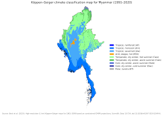

Imagine waking up every morning wondering if you’ll have enough water to drink, cook, or clean. For thousands of families in Myanmar, this isn’t a distant worry — it's daily life.
Every year, the dry season in Myanmar brings new challenges. Rivers shrink. Wells run dry. But in recent years, things have gotten worse. The country is not only facing long periods without rain — it's also struggling with political conflict, rising food and fuel prices, and a health system in crisis.
People living in remote villages and temporary camps are especially vulnerable. Children, the elderly, and pregnant women are at the greatest risk from dehydration and waterborne illnesses like diarrhea and cholera.
“There are days we have to choose between water for cooking or bathing,” says a mother living in central Myanmar. “We used to fetch water from a nearby stream, but now it’s dried up.”
Aid organizations are working to deliver emergency water tanks, filters, and hygiene kits. But long-term help is needed — including better water systems, more community support, and policies that protect water access for all.
